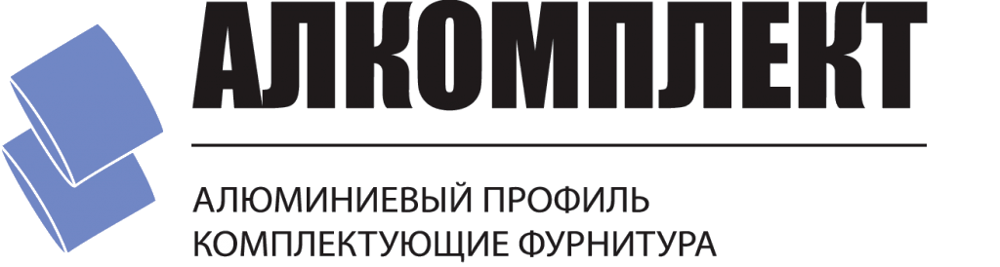
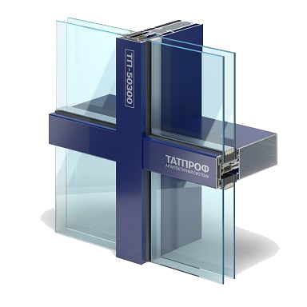

Компания «ЛасмаАлюминийКомплект» занимается реализацией алюминиевого профиля и фурнитуры с 1998 года. Начиная бизнес в качестве представительства завода «Профиль-Холдинг», мы уверенно закрепились на рынке, приобрели собственную складскую базу и уже с 2001 года осуществляем самостоятельную деятельность, как дилер архитектурных систем ТАТПРОФ и СОКОЛ, а также фурнитуры САТУРН.

Фасады серии ТП-50300
Для фасадов, особенно, когда речь идет о больших размерах, достоинства использования алюминиевогопрофиля неоспоримы.
- Он прочнее, долговечнее и безопаснее при пожаре, чем пластик или дерево.
- Конструкции из алюминия отличаются прочностью сборки, внешний вид никогда не требует окраски и всегда смотрится достойно.
- Фасадные системы могут применяться в любом климатическом поясе, так как отлично противостоят низкой и высокой температурам.